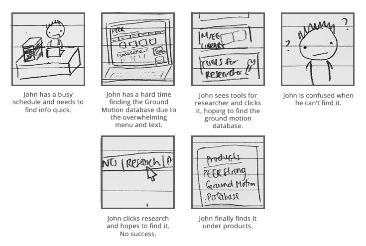
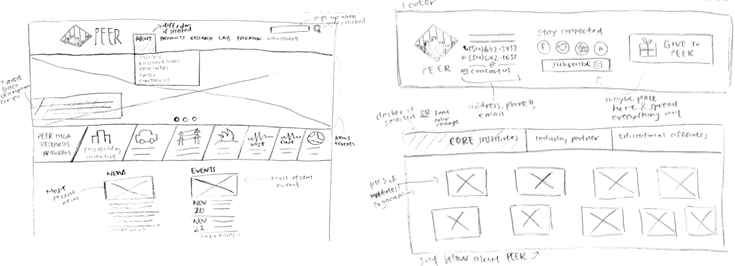
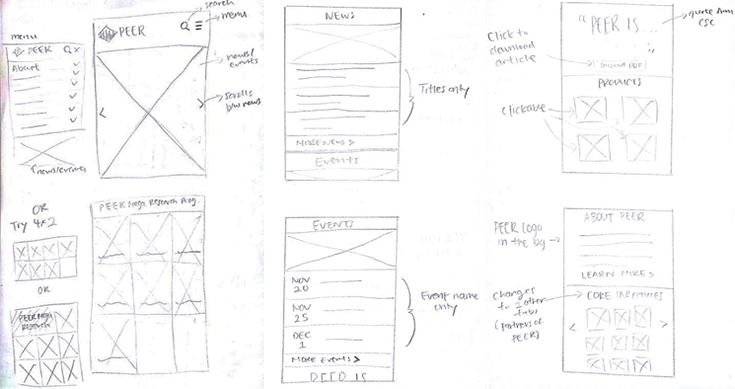
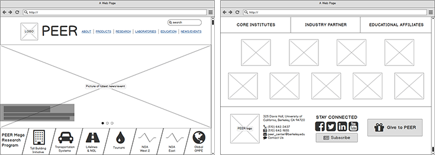
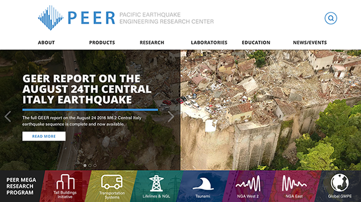
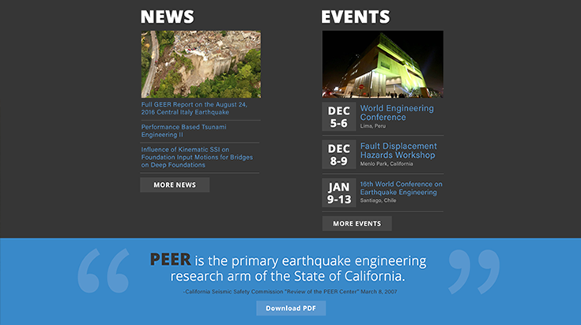
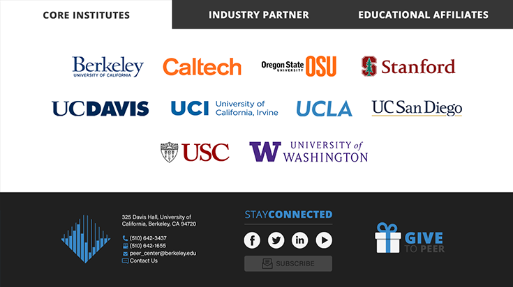
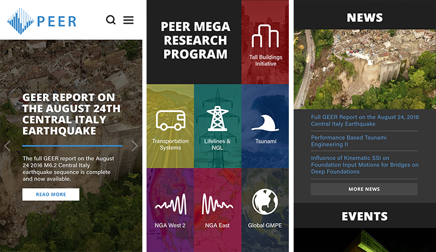
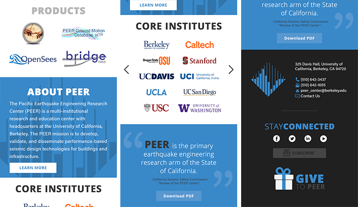

PEER
Type UI/UX - Web Redesign
Date Fall 2016
Intro
PEER is a multi-institutional research & educational center focused on performance-based earthquake engineering. The goal of this project was to update the landing page to reflect current design trends and provide smooth navigation system with good hierarchical structure.
1. Research
I spent some time collecting information from Google Analytics, PEER staff, and college students about the current website. The findings were compiled and consolidated.
Goal
Provide resources and information about PEER research, news/events, and services.
Audience
Primary audience - Civil and structural engineers, faculty members from institutions, industry looking for lab testing information
Secondary audience - Students, policy makers
Likes/Dislikes
Likes: News and events easily updated
Dislikes: Not organized, bad hierarchical structure, not mobile-friendly
2. Analysis
Persona/Storyboards
Two personas and storyboards were created based on research.
Storyboard for User A
Hierarchical Structure Redesign
After making the personas and storyboards, a new hierarchical structure was created to provide a smoother navigation system.
3. Design
Paper Prototype
To begin, I started out by drawing the framework on paper to get a sense of how things will look. It allowed me to see what layout works to improve user experience.
Mobile Version
Low-fidelity Prototype
I moved onto low-fidelity prototype to see how the framework would look on paper.
High-fidelity Prototype
After getting feedback, a high-fidelity prototype was created to provide better visual interface.
  Mobile Version
 4. Test & Reflect
I tested both web and mobile prototypes with PEER staff and friends. The feedback given was used to further improve the product.
Lessons learned
- Get feedback earlier on in the process, especially during low-fidelity stage.
- Go through user personas with client to get an even better understanding of the audience.